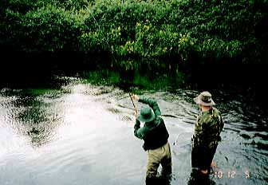
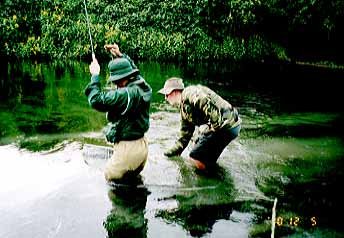
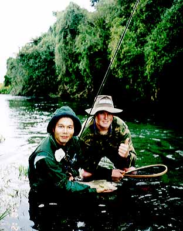

Photo Gallery
98/12/05 Spring creek - 2

Under the shade of the glass.
The spring creek that flowed quietly but strongly was difficult for me. We had to make an acculate cast and correct the fly line with mending work at the same time. It was such a hard job for us. After ten times of the cast, I finally succeed to make a complete strike.

Mr. Dean Trolle, a young but well experienced fishing guide.
We made a strange voice at each strike because of our excitement. Beside us, a young fishing guide, Deen Trolle performed his skilful landing technique. He put his hand in his pocket while he landed the trout.

Smiled.
All of us, who were holding the brown trout and were standing near the bank, smiled.
Photo Gallery Contents
Home